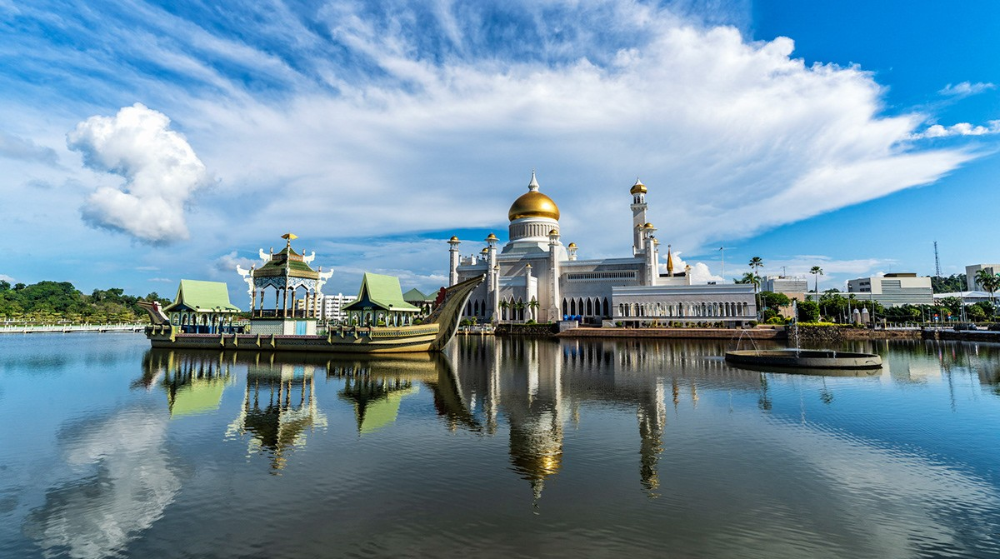
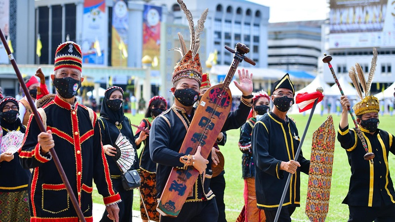
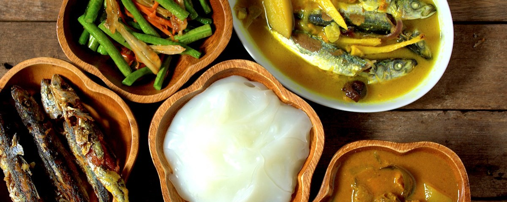
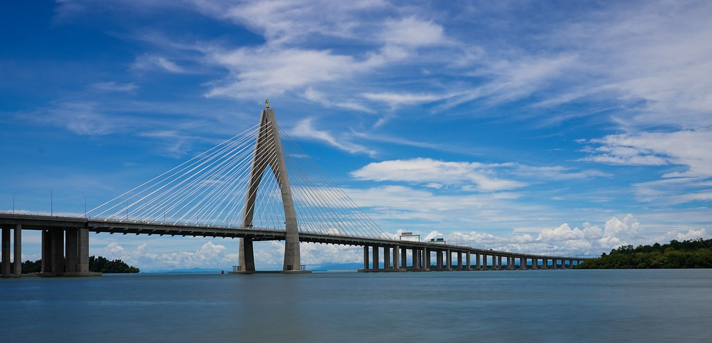

Welcome to Brunei Darussalam !

Welcome to the Adobe of Peace.
Discover Brunei

Discover the culture & heritage of Brunei Darussalam !
Places to Visit

Explore tourist attractions in Brunei Darussalam !
Taste of Brunei

Experience the delicious cuisine of Brunei Darussalam !
Plan Your Visit !

Plan your perfect trip to Brunei !